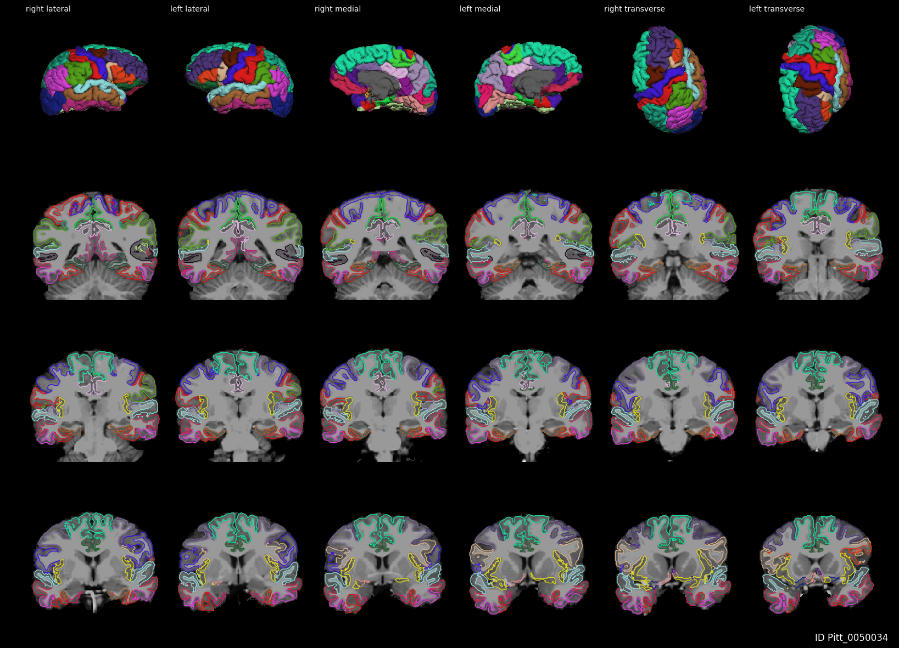
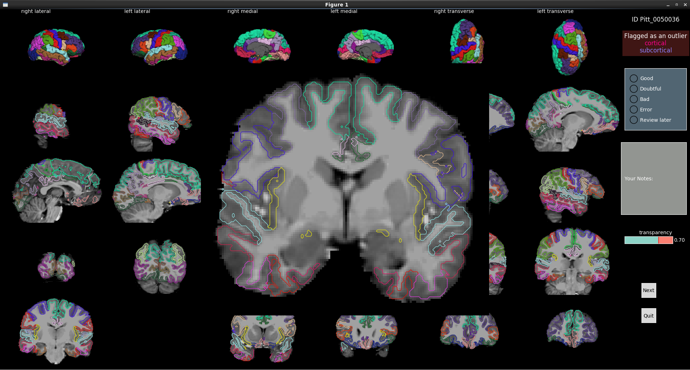
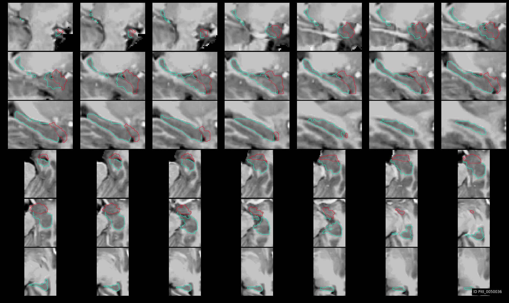
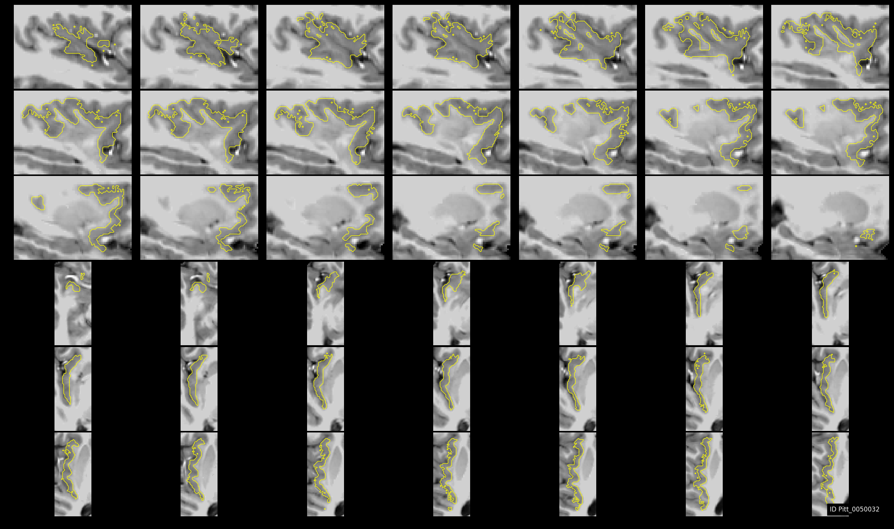
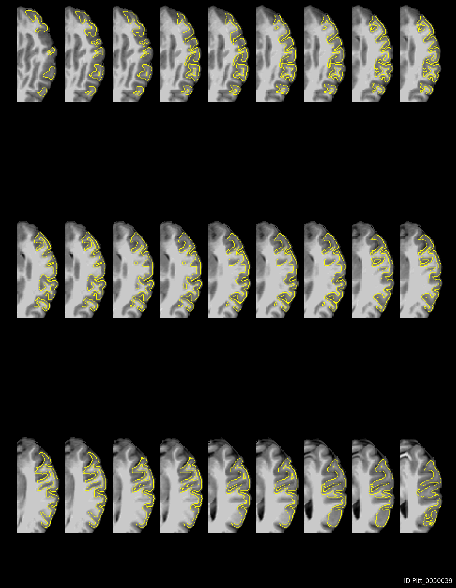

visualqc¶

Tool to automate the quality control workflow of MRI segmentations (gray and white matter, cortical, subcortical and other arbitrary segmentations) produced by Freesurfer and other tools.
Assessing and guranteeing the accuracy of any automatic segmentation (be it gray or white surfaces for cortical thickness, or a subortical segmentation) requires manual visual inspection. Not just one slice. Or one view. But many slices in all the views to ensure the 3d segmentation is accurate at the voxel-level. This process, in its most banal form, is quite cumbersome and time-consuming. Without any assistive tool, it requires opening both the MRI and segmentation for one subject in an editor that can overlay and color them properly, and manually reviewing one slice at a time, navigate through many many slices, and record your rating in a spreadsheet. And repeat this process for multiple subjects. In some even more demanding tasks (such as assessing the accuracy of cortical thickness e.g. generated by Freesurfer), you may need to review multiple types of visualizations, such as surface-redering with different labels colored appropriately, in addition to voxel-wise overlay on MRI. Without an automatic tool, this process allows too many human mistakes, over the span of 100s of subjects over many weeks jumping through multiple visualization software and spreadsheets. visualqc aims to reduce that to a single command to seamlessly record the ratings of accuracy and navigate through 100s of subjects with ease. All you need to do is sit back, focus your exper eye on the accuracy and visualqc takes care of the flow and bookkeeping.
Neuroimagers familiar with ENIGMA quality control (QC) protocols would especially find this tool much easier. In addition to integrating valuable experience and knowledge from those protocols, this tool makes it easy so you don’t have to deal with multiple scripts (to generate images and combine visualizations), and no alternating between multiple spreadsheets to keep track of ratings. Additional advantages include zooming in and needing to use only a single tool to QC both cortical and subcortical segmentations.
- Free software: MIT license
- Documentation: https://visualqc.readthedocs.io.
Features¶
- Makes the review and rating workflow seamless and easy! It is simple as: visualize the auto-generated overlay, review, zoom-in wherever you need, rate the quality, make notes and proceed to next!
- Automatically detect and flag outliers (in testing) based on over 500 measurements from Freesurfer
- Display multiple slices in multiple views, and easily navigate all subjects in a dataset
- Allows you to zoom in to any view/slice to ensure you won’t miss any detail. No need to squint your eyes!
- Keyboard shortcuts to speed up the process, no need to lift your fingers!
- Allows to make arbitrary notes on the current segmentation/parcellation
- Allows you to control the transparency of overlay to your expert preference
- Allows to focus on a single or a set of arbitrary segmentations (hippocampus, or PCG or DMN etc) if necessary.
Gallery (contour)¶
Some examples of how the interface looks are shown below. The first screenshot showcases the use case wherein we can review the accuracy of Freesufer’s cortical parcellation against the original MRI (note that only one view is shown and one panel is zoomed-in):
In this screenshot, we show the user interface showing the elements to rating, notes and alerts from outlier detection module:
In the screenshot below, we show the use case for a single label (subcortical segmentation, tissue class or cortical ROI) - shown here are hippocampus and amygdala:

We can also add nearby amygdala:
And you can add as many ROIs as you like:

ROIs could be from anywhere in the MRI (including big cortical labels too!). For example, let’s look at Insula (label 1035 in Freesurfer ColorLUT) in the left hemi-sphere :
And, how about middle temporal?

Let’s just focus on axial view to get more detail:
Gallery (filled)¶
Fore more visualizations e.g. those with filled labels instead of contours, refer to Gallery (filled).